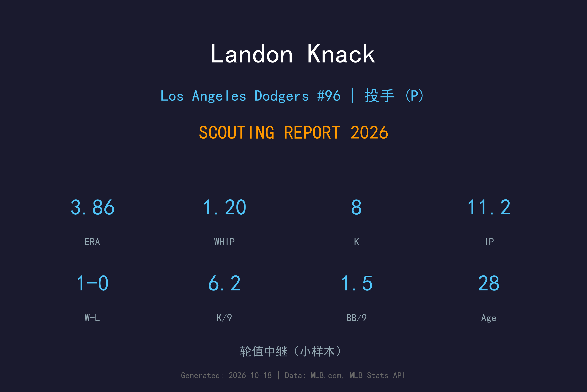
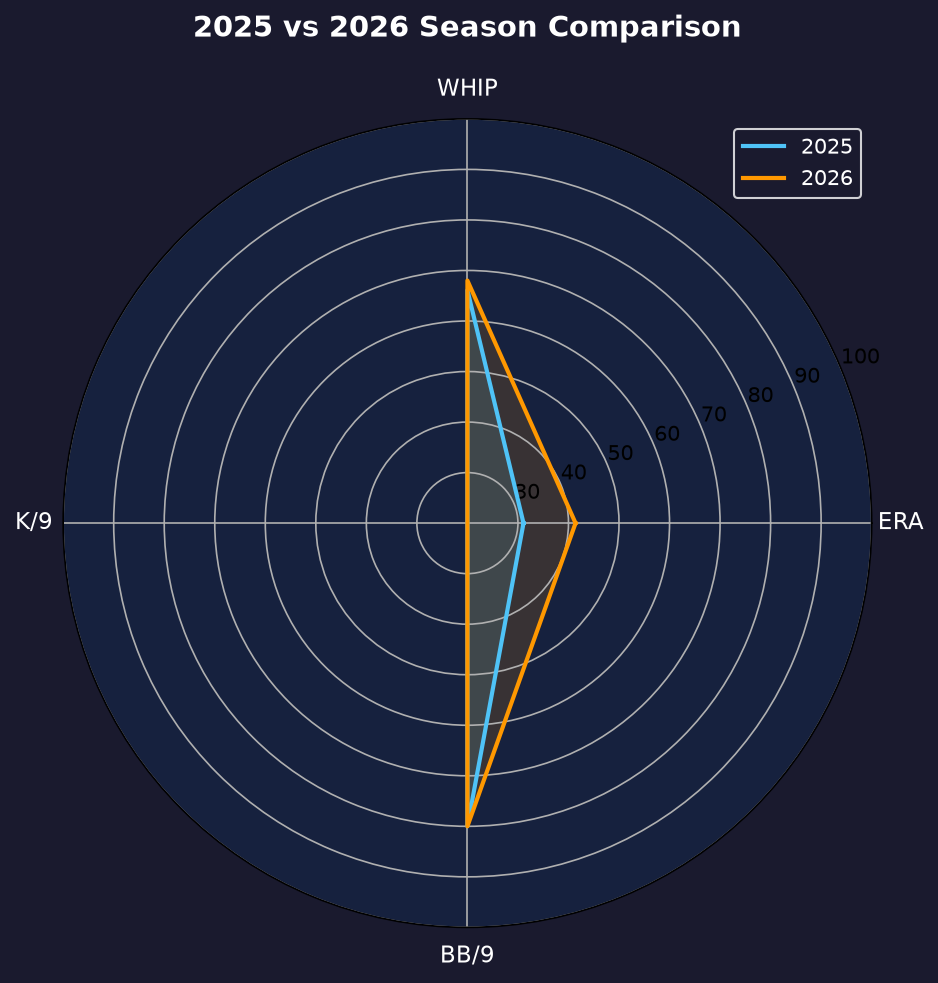
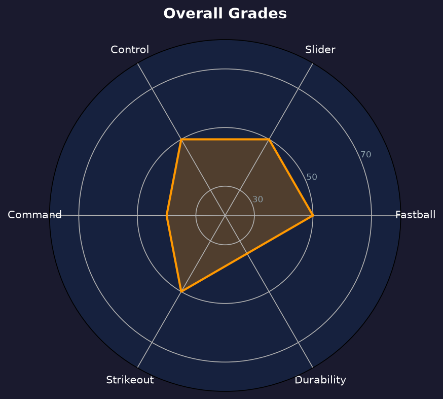

Los Angeles Dodgers #31 | 投手 | 右投 / 左打 | 伤愈复出的控球型投手

Landon Knack 的 2026 赛季被伤病切割得支离破碎：上半年长期缺阵，8 月 12 日才伤愈上调，季末以牛棚身份出赛 4 场。11.2 局里他送出 8 次三振仅 2 次保送，K/BB 4.00、WHIP 1.20 都是优质水准——但 4 支被轰（3.09 HR/9）让 ERA 停在 3.86。
这是一份典型的 Knack 式成绩单：控球精准、球种丰富，唯独全垒打像定时炸弹。2025 年他以先发身份出赛 10 场、被轰 10 支（2.13 HR/9）；2026 年转牛棚后压制力略有起色，但 HR/9 反而更高——球路位置问题依然悬而未决。
29 岁的 Knack 不再是"未来之星"，而是道奇名单上最实际的 depth 选项。他的命运取决于一个问题：能不能把 HR/9 压回 1.5 以下。做得到，他是轮值后端/长中继的合格答案；做不到，他将停留在 3A 与名单边缘之间。
在道奇完成 MLB 首秀，随后两个赛季在先发与后援之间多次切换角色，为球队填补轮值与牛棚的深度缺口。
常规赛收官战，在 Clayton Kershaw 生涯最后一次常规赛登板后接替出场，后援 3.2 局送出 7 次三振（面对 13 名打者），拿下救援成功，为传奇的常规赛生涯画上句点。
2025 年开季在大联盟名单、先发 7 场后受伤病困扰；2026 年上半年基本缺阵，8 月 12 日伤愈回归后以纯牛棚身份出赛，4 场全部后援。
复出的 11.2 局中 K/BB 4.00、WHIP 1.20，显示控球与状态基本回归，只是被轰率仍待解决。
小样本警告：仅 11.2 局，且全部为季末复出后的后援出赛。1.20 WHIP 与 3.86 ERA 的落差几乎全部来自 4 支全垒打。

| 赛季 | G（GS） | W-L | ERA | IP | SO | BB | WHIP | HR |
|---|---|---|---|---|---|---|---|---|
| 2025 | 10（7） | 3-2 | 4.89 | 42.1 | 42 | 19 | 1.39 | 10 |
| 2026 | 4（0） | 1-0 | 3.86 | 11.2 | 8 | 2 | 1.20 | 4 |
从先发转为纯后援：保送率从 4.04 骤降至 1.54 BB/9，控球明显好转；但被轰问题反而恶化（HR/9 2.13→3.09）。角色改变没有治愈他的致命伤。
球速：91-95 mph
评分：B
球速不顶级，但依靠控球与角度弥补。问题不在球速而在位置——偏高或居中时容易被强力打者掌握。
球速：82-86 mph
评分：B
主要变化球，横向位移可靠，是制造挥空与滚地球的双面武器。
球速：84-87 mph
评分：B-
对付左打者的配球，握在手中时可让打者失去平衡，品质随状态波动。
球速：78-82 mph
评分：C+
第四球种，用于打乱节奏与抢好球数，尚未成为稳定武器。
1.20 WHIP 说明他并不常被上垒，但 ERA 始终压不下来——失分几乎全部来自零星长打。2025-2026 合计 14 支被轰（54.1 局、2.32 HR/9），这在任何层级都是不及格的数字。分析显示他的速球在 deep count 时容易留在好球带中段，而他不具备 96+ mph 的球速来惩罚打者的锁定。
2026 年复出后改任纯牛棚：保送率从 4.04 暴跌到 1.54 BB/9，配球更精简、状态维持更容易，还拿下 1 次救援成功。但短局数放大了每次失投的代价——4 支被轰全部发生在不到 12 局里。牛棚化治愈了他的控球，却没有治愈被轰。
上半年与伤病搏斗，下半年在牛棚寻找生存空间。11.2 局的表现足够让他留在 40 人名单，但 29 岁的年龄意味着道奇不会再给他"慢慢开发"的耐心。2027 年春训，他需要用实际表现赢得一个牛棚位置，否则将在 depth 名单上被更年轻的 arms 取代。

控球精良但被轰率缠身的发后援摇摆人
C+ 级 / 名单边缘的深度投手
Landon Knack 的2027赛季目标是从春训开始锁定一个牛棚位置，把 HR/9 压到 1.5 以下。他的球路与控球足以在大联盟生存，只要不再被长打轰炸。
2026：上半年伤病缺阵，8/12 复出后 4 场后援 3.86 ERA、1 救援；季末留 40 人名单
2027：目标健康完整赛季，定位长中继/轮值第六人，HR/9 ≤1.5
2028+：若被轰率改善，可长留大联盟；若持续偏高，将沦为 3A depth 或遭 DFA
Landon Dakota Knack 1997 年 7 月 15 日出生于田纳西州 Johnson City。他先在 Walters State 社区学院打了两年，随后转入东田纳西州立大学（ETSU）。在 ETSU 他成为校史生涯 ERA 纪录保持者（2.60），并在 2020 年 3 月 7 日对 Wagner 的比赛中单场 16 次三振创下校史纪录——那个因疫情缩短的赛季，他投出 4 胜 0 败。
2020 年 MLB 选秀（因疫情缩短为五轮），道奇在第 2 轮（总第 60 顺位）选中了他。小联盟因疫情停摆反而给了他独特的发育环境——他在道奇的 alternate site 与一众大联盟投手一同训练，技术打磨远超同级生。2021-2023 年他在小联盟层级稳步爬升，2024 年 4 月 17 日完成大联盟首秀。
此后两年，他一直在"轮值第五人"与"牛棚长人"之间摇摆：2025 年先发出赛 7 场后被轰问题困扰，2026 年又因伤病缺席大半年后转型纯牛棚。Knack 的故事是一个关于适应的故事——从大学 ace 到 pro depth piece，他放下了先发投手的骄傲，专注于"把球投进好球带、让队友守住球"。这份务实，是道奇一直把他留在 40 人名单的原因。